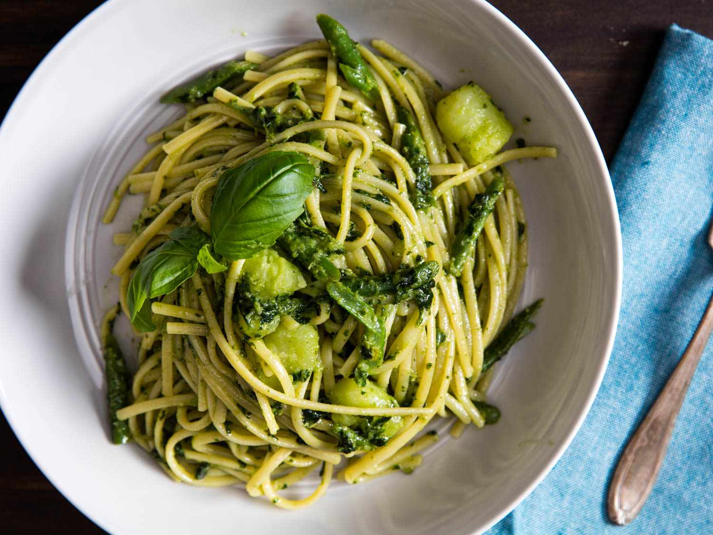

Kagan's favorite Pesto Pasta Recipe

Description
This recipe is rather simple, all it needs is, your favorite pesto sauce of choice
siraracha as well as some parmigiano. After your pasta is cooked mix them all and ta da!
its done.
Ingredients
- Pesto Sauce
- Siraracha Sauce
- Parmigiano
Steps
- Cook your pasta to your liking
- Open and add your pesto sauce to your pasta to your liking
- Add as much siraracha as you want
- Stir it all and eat!